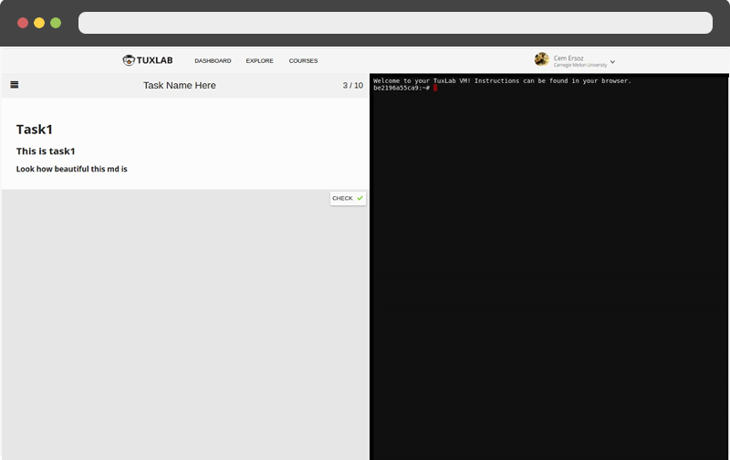

SPONSORED BY
CREATE INTERACTIVE LINUX COURSES
three simple steps from chalkboard to the cloud:
- Create Lab File
- It's just Javascript...
The TuxLab API makes it easy to create custom Linux environments for your students. Define a setup function which defines the infrastructure and program requirements, and any number of lab steps for your students to perform. Our code executes opaquely- verifying and grading the users performance securely.
Example Lab
- Upload to TuxLab Cloud
- Infrastructure on Auto Pilot...
-
OPEN SOURCE INFRASTRUCTURE
All of TuxLab's dependencies are Open Source- from major projects like Ansible, MongoDB and Docker, to our custom Proxy server container.
-
AUTOMATIC SCALING
TuxLab's infrastructure is automatically provisioned and monitored using Ansible Tower. No need to worry about large classes crashing your services- the infrastructure is designed to scale with demand.
-
HEALTH MONITORING AND LOGGING
Once your infrastructure is running, our Health Monitoring and Logging components insure that server failure is automatically fixed and reported.
- Enroll Users
- A real Linux environment in any browser...
Students can easily see assignments, and connect to Lab Enviornments through our browser-based terminal emulator. Take a closer look:

